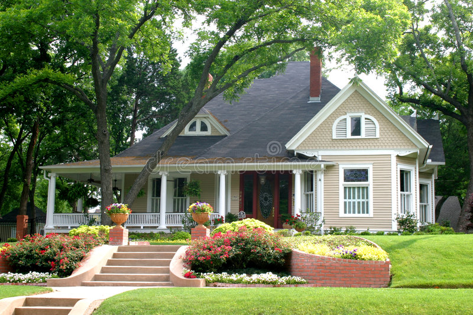

Freelance Senior Surgical Neurophyisologist with over 800 successful surgeries!Data being acquired and anlayzed in real-time.
After graduating with a bachelor's degree in neuroscience from Rutgers University - New Brunswick in 2016, I recieved a medal for my achievements in neuroscience from the department.
I then worked in a pharmaceutical setting learning about and testing different drug componenets including FDA regulated drugs. I was then hired as a traveling surgical neurophysiologist and earned
a CNIM certification in under 9 months. Since then I have trained over 12 people and helped them understand the different modalities required for spine, brain, ENT, and vascular surgeries. Over my 3 years in the field, I have worked in over 40 hospitals systems, surgery centers, and with various different surgical groups.
I excel at providing world-class patient care and monitoring in SSEPs, sEMG, tEMG, tEMGps, TcMEPs, EEG, TOF, BAERs, Phase Reversal, and Motor Mapping. These modalities are used during surgery to provide real-time
analytical data to help determine patient outcome and prevent injury to various nerves and other critical structures involved. I work closely with the anesthesia team and the surgeon to ensure that
everything is well documented and accounted for in advance. Please feel free to contact me below for monitoring services for your surgical practice or even for consulting services in this field.
Sofware Development
Beginner WebdeveloperDebugging code
I just joined a coding bootcamp to hone my skills in the field. I want to be part of an industry that allows me to work remotely and climb a corporate ladder that is more challenging. I can make basic websites
and am always learning new ways to improve. I want to be able to code my own applications and mobile games to solve problems and create joy to a
large amount of people. Computer programming is an invaluable skill and will continue to be more and more necessary as time progresses. I will allow me to
manifest my ideas and thoughts into a working application. I want to be at the forefront of new innovation and be part of a team that is creating something new for millions of people to enjoy.
I hope to one day join MAANG-like companies and learn from the best and brightest. I want to be earning a good living to support my family and provide for a more than stable future.
Software development will be my first step towards these goals and I'm excited for the adventure. Check out my github HERE!
Property Management
Let me manage your properties!

Landscaping is on point.
I have been managing properties for 2 years now and one of them I have renovated entirely myself. I have 8 years of experience in construction as it is one of my passions.
I have renovated a 100-year old home and fixed all the issues and converted it into a modern rental that cash-flows well.
I have always had a goal of having 30+ units entirely managed and owned by myself. Currently I manage three properties and I'm always willing to add more as long as its withing the tri-state area. My personal goal is to add a beach home and a mountain home
to my portfolio and be able to use them each once or twice a year when I'm not already renting it out. If oyu are looking for a responsible property manager in the NY and NJ area, look no further!
I offer competitive rates and will take care of your property like it is my own.
Hardworking optimist who enjoys the simpler things in life
Born and raised in the heart of New Jersey. I was the first generation to graduate from college in my
family which attributes to my desire to grow and build something for the future generations. I am no
stranger to hard work and always make sure that any task is met with the best of my ability.
Some of my hobbies include hiking in the pallisades, a cold beer, working out, and going ot the banya.
I'm currently excited to transition into the tech industry as it will allow me to get closer to
my personal goals. One of those goals is that I'm looking to move to NYC and be closer to friends and family.
I want to be surrounded by other individuals who are creating and striving for a better life as well.
"If you set your goals ridiculously high and it's a failure, you will fail above everyone else's success." -James Cameron